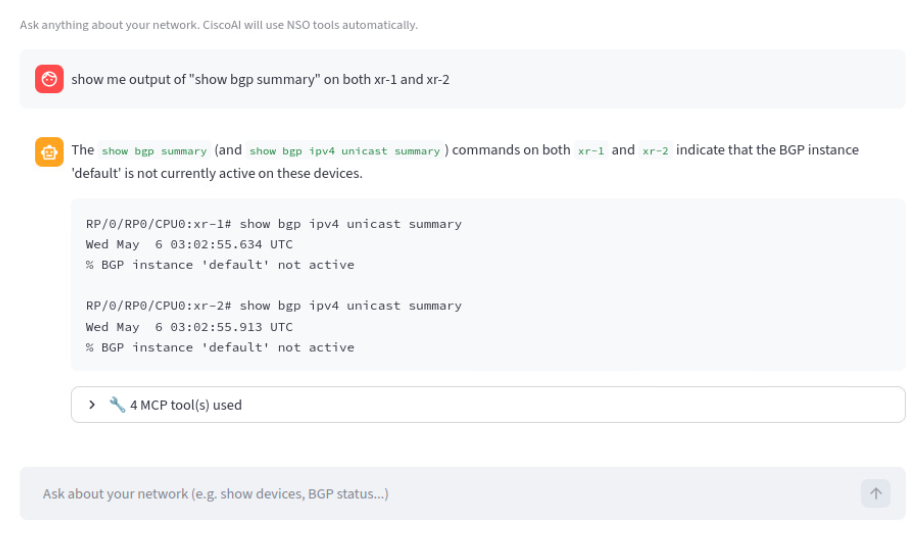
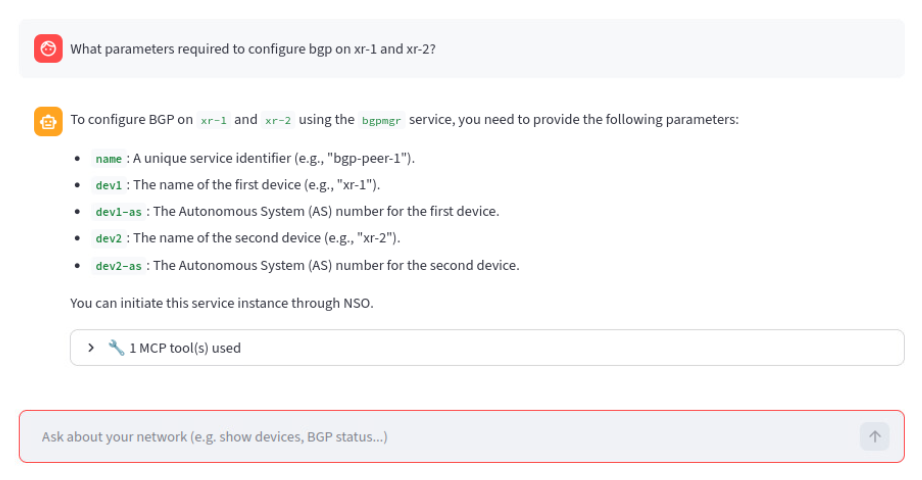
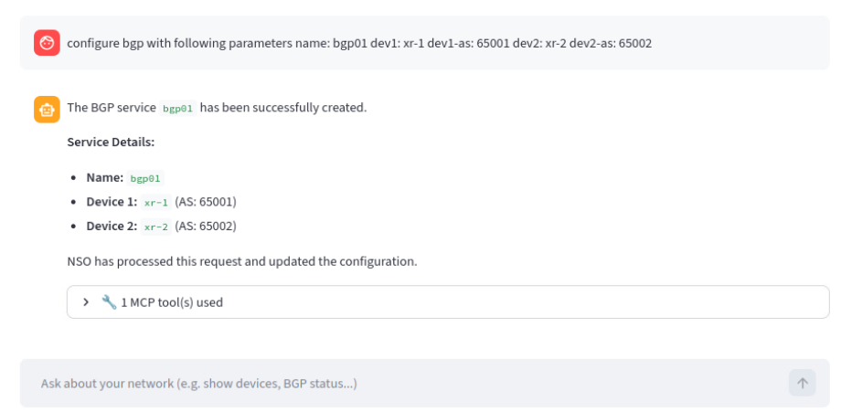
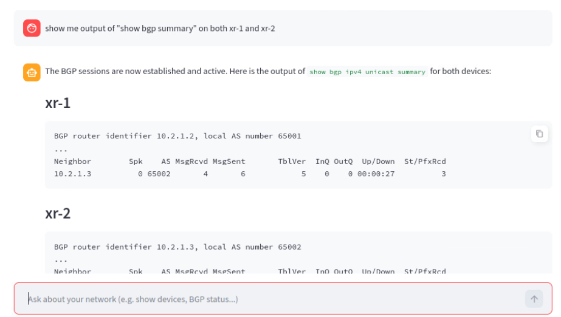

Lab 11: NSO MCP — Service Models and BGP¶
Continuing from Lab 10
Lab 10 ended with NSO MCP exposed via the permit policy and the web MCP client running on http://localhost:8501/. In this lab you will plug a real service package (bgpmgr) into the same MCP client and configure BGP between xr-1 and xr-2 using natural language — then look under the hood with a second MCP client.
Learning Objectives¶
By the end of this lab you will be able to:
- Clone and compile a custom NSO service package (
dcloud-bgpmgr) and load it viapackages reload. - Confirm that the package's tools appear in the MCP web client after pressing Refresh Tools.
- Use the MCP client to ask what parameters the BGP service requires, and to apply the configuration.
- Verify BGP neighbor state through MCP (no direct
show bgpon the device CLI required). - Launch the
ollmcpCPU-only MCP client and list NSO tools and prompts via/tand/prompts.
Time Budget¶
- Load bgpmgr package — 18 min
- Inspect MCP tools — 12 min
- Configure BGP via MCP — 28 min
- Analyze with ollmcp — 12 min
Total — 70 min
Prerequisites¶
- Lab 10: NSO MCP — Setup and First Client completed.
- NSO 6.7 LTS is running, MCP server is enabled and policy default-action is
permit(100+ tools visible in the web client). - The web MCP client is reachable at http://localhost:8501/.
- Both xr-1 and xr-2 are in
sync-from: truestate.
Procedure¶
Rollback
This lab is not idempotent — it loads a service package and writes BGP configuration to xr-1 and xr-2 via that package. To roll back, in the NSO CLI:
admin@ncs# config t
admin@ncs(config)# devices device xr-1 config no router bgp
admin@ncs(config)# devices device xr-2 config no router bgp
admin@ncs(config)# commit
To also remove the bgpmgr package, delete it from ~/ncs-run/packages/dcloud-bgpmgr and run packages reload in the NSO CLI.
Step 1: Clone and compile the bgpmgr service package¶
Loading a service package adds extra tools to NSO MCP automatically. Clone the demo package into the NSO packages directory:
Compile the package:
Step 2: Load the package into NSO¶
In the NSO CLI:
Wait for the reload to complete.
Step 3: Confirm bgpmgr tools appear in the MCP web client¶
Go back to the web-ui (http://localhost:8501/) and press Refresh Tools on the left menu. You should now see bgpmgr tools listed alongside the core NSO tools.

Step 4: Clear any existing BGP configuration on xr-1 and xr-2¶
Both XRd routers currently carry BGP configuration from earlier labs. Remove it through NSO so we have a clean slate to configure via MCP:
$ ncs_cli -Cu admin
admin@ncs# config t
admin@ncs(config)# devices device xr-1 config
admin@ncs(config-config)# no router bgp
admin@ncs(config-config)# top
admin@ncs(config)# devices device xr-2 config
admin@ncs(config-config)# no router bgp
admin@ncs(config-config)# commit
Step 5: Confirm there are no BGP neighbors — via MCP¶
In the web MCP client, ask the assistant to verify there are no BGP neighbors:
"List BGP neighbors on xr-1 and xr-2."

Step 6: Ask the assistant which parameters bgpmgr needs¶
Use the MCP client to discover the package surface without reading the YANG model directly:
"What parameters do I need to configure BGP through the bgpmgr package?"

Step 7: Configure BGP between xr-1 and xr-2 through the assistant¶
Now ask the assistant to configure BGP using the parameters it just listed:
"Configure BGP between xr-1 and xr-2 using bgpmgr."
The assistant will translate your request into the appropriate bgpmgr service invocation and commit it through NSO.

Step 8: Verify BGP neighbors are up — via MCP¶
Ask the assistant again, the same way you would ask a colleague:
"Are the BGP neighbors up between xr-1 and xr-2?"

Step 9: Inspect MCP tools and prompts with ollmcp¶
The scenario ships a second MCP client (ollmcp) intended for Ollama. We will use it purely for analysis — listing what NSO MCP exposes.
Open a new terminal tab and run:
At the ollmcp prompt, type /t to list all NSO tools currently exposed by MCP:

Type /prompts to list all available MCP prompts:

For more information about this client, see https://github.com/jonigl/mcp-client-for-ollama.
ollmcp performance
The Ollama-based MCP client in this scenario runs CPU-only (no GPU) and is consequently very slow. Treat it as an analysis / introspection tool, not an interactive assistant.
Verification¶
You should now have:
- The
bgpmgrpackage compiled and loaded — its tools appear in the MCP web client after Refresh Tools. - BGP configuration on xr-1 / xr-2 authored end-to-end through MCP (no manual
router bgpblock typed by hand). - BGP neighbors between xr-1 and xr-2 reported as up / Established by the MCP assistant.
-
ollmcprunning and able to list NSO tools (/t) and prompts (/prompts).
Troubleshooting¶
bgpmgrtools don't appear after Refresh Tools — confirmpackages reloadfinished cleanly in the NSO CLI (show packages package bgpmgr oper-status). Then press Refresh Tools again.
makefails compiling the package — verify you are inside~/ncs-run/packages/dcloud-bgpmgr/src/and thatNSO-6.7/ncsrchas been sourced in the shell.- MCP cannot reach the devices — re-check
devices sync-fromin NSO CLI and that the device authgroups still resolve. - The assistant refuses or returns an empty plan — your MCP policy may have been switched back to
restricted. Re-verifymcp-server policies default-action permitis committed.
Common Errors¶
Symptom: `bgpmgr` tools never appear in the MCP web client.
Cause `packages reload` failed (compile error in `dcloud-bgpmgr/src/`) or finished with the package in error state, so MCP cannot expose its tools.
Fix Run `show packages package dcloud-bgpmgr oper-status` in the NSO CLI. If `oper-status` is anything other than `up`, rebuild: `cd ~/ncs-run/packages/dcloud-bgpmgr/src && make clean && make`, then re-run `packages reload` and press **Refresh Tools** in the web client.
Symptom: Assistant says BGP is configured, but neighbors do not come up.
Cause AS numbers, neighbor addresses, or update-source were inferred incorrectly by the LLM (e.g., neighbor address pointed at a loopback that is not advertised yet).
Fix Ask the assistant to *'show the running BGP configuration on xr-1 and xr-2'* and reconcile against the topology table in Lab 10. Re-invoke the `bgpmgr` service with corrected parameters and commit.
Symptom: Assistant refuses to act or returns an empty plan in this lab.
Cause MCP policy was reverted to `restricted` between Lab 10 and Lab 11, so the service-write tools are no longer exposed.
Fix In the NSO CLI: `show running-config mcp-server policies default-action` — if it does not say `permit`, repeat Step 8 of Lab 10.
What's Next¶
Labs 10 and 11 introduced NSO 6.7 MCP as a way to drive NSO with natural language and to plug custom service packages into the same interface. From here, useful next steps outside this workbook include:
- Designing a custom
mcp-server policiesthat exposes only the tools your operators should actually use (vs. the broadpermitdefault). - Building your own service package and watching its tools appear automatically in the MCP client — the workflow is the same as
bgpmgrin this lab. - Wiring MCP into a production-grade client (the
web-uiandollmcpclients in this scenario are demonstrations — real deployments will use a different client/LLM combination).